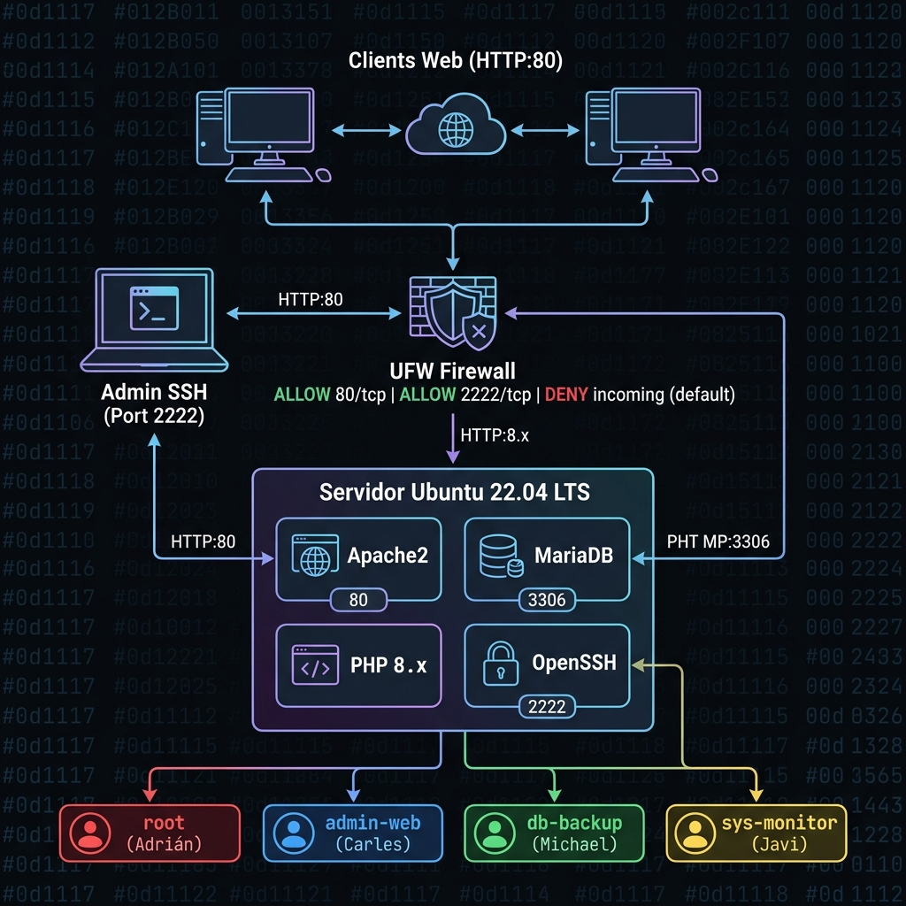

🖥️ Benvinguts a SRE-Docs¶
Documentació i Desplegament de Servidors és un projecte de simulació d'infraestructura empresarial desenvolupat en el marc del mòdul de Sistemes de la Informació de 1r ASIR.
L'objectiu d'aquest portal és documentar de manera clara i professional el desplegament d'un servidor corporatiu amb pila LAMP (Linux, Apache, MariaDB i PHP), així com les mesures de seguretat i gestió d'usuaris aplicades.
📋 Descripció del Projecte¶
El projecte simula l'entorn real d'una empresa en obert, on es configura un servidor Ubuntu/Debian amb els serveis mínims necessaris per allotjar una aplicació web. S'han aplicat bones pràctiques de seguretat, principi de mínim privilegi i documentació de tot el procés.
| Element | Detall |
|---|---|
| Sistema Operatiu | Ubuntu 22.04 LTS Server |
| Pila de Serveis | LAMP (Apache2, MariaDB, PHP 8.x) |
| Gestió d'Accés | Usuaris amb rols diferenciats |
| Seguretat | UFW Firewall + Hardening SSH |
| Metodologia | Scrum (sprints setmanals) |
👥 Equip de Treball¶
El projecte ha estat desenvolupat per un equip de quatre persones, cadascuna amb un rol tècnic i un usuari del sistema assignat:
🔴 Adrián — Scrum Master / root¶
- Rol en el projecte: Scrum Master i líder tècnic. Coordina les tasques setmanals, gestiona el repositori i supervisa el desplegament global.
- Usuari del sistema:
root - Permisos: Accés total al servidor. Responsable de la configuració inicial i de les tasques d'administració sistèmica.
🔵 Carles — Administrador Web / admin-web¶
- Rol en el projecte: Administrador del servidor web Apache. Gestiona els fitxers de la web, les configuracions de virtual hosts i el directori públic.
- Usuari del sistema:
admin-web - Permisos: Propietari del directori
/var/www/html. Sense accés a la base de dades ni als logs del sistema.
🟢 Michael — Seguretat i Backups / db-backup¶
- Rol en el projecte: Responsable de la seguretat de la base de dades i de les còpies de seguretat. Configura i executa els scripts de
mysqldump. - Usuari del sistema:
db-backup - Permisos: Accés de lectura a les bases de dades de MariaDB per realitzar còpies. Sense accés al sistema de fitxers web.
🟡 Javi — Auditor del Sistema / sys-monitor¶
- Rol en el projecte: Responsable de l'auditoria i monitoratge del servidor. Revisa els logs del sistema per detectar errors o activitat sospitosa.
- Usuari del sistema:
sys-monitor - Permisos: Lectura de fitxers de log (
/var/log). Sense permís d'escriptura en cap directori del sistema.
🗺️ Esquema de la Xarxa¶
A continuació es mostra el diagrama de l'arquitectura de xarxa de la infraestructura simulada:

Nota: L'esquema mostra la topologia de xarxa amb el servidor LAMP al centre, el firewall UFW com a primera capa de protecció i els clients que hi accedeixen via HTTP i SSH.
🗂️ Contingut del Portal¶
| Secció | Descripció |
|---|---|
| ⚙️ Configuració de Servidors | Instal·lació pas a pas de la pila LAMP |
| 👤 Gestió de Rols i Usuaris | Creació d'usuaris i assignació de permisos |
| 🔒 Seguretat i Hardening | Configuració del firewall i enduriment SSH |
Metodologia Scrum
El projecte s'ha gestionat amb Scrum, dividint el treball en sprints setmanals. Cada membre de l'equip tenia tasques assignades que es revisaven en reunions diàries de seguiment (daily standups).